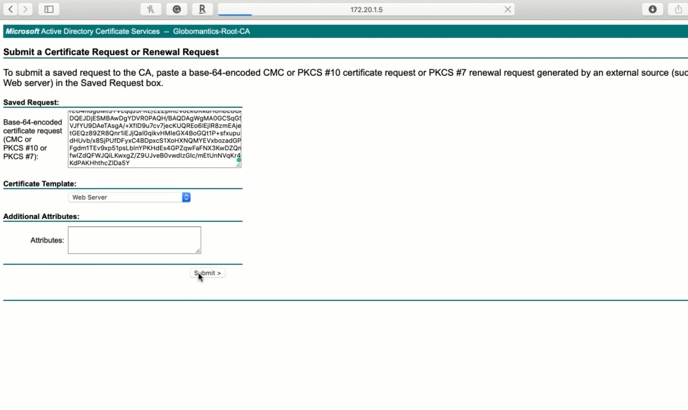

Configuring FlexVPN
Creating a Dynamic VTI
Dynamic VTIs
Allow VPN interfaces to be automatically created
Reduces administrative overhead
Virtual template
Globomantics-HQ#conf t
Globomantics-HQ(config)#interface virtual-template 6 type tunnel
Globomantics-HQ(config-if)#ipv6 unnumbered loopback
Globomantics-HQ(config-if)#tunnel source 1000:1::1
Globomantics-HQ(config-if)#tunnel mode ipsec ipv6
Globomantics-HQ(config-if)#tunnel protection ipsec profile FlexIPsecProfile
Globomantics-HQ(config-if)#
Globomantics-HQ(config-if)#exit
Globomantics-HQ(config)#crypto ikev2 profile FlexIKEv2Profile
Globomantics-HQ(config-ikev2-profile)#virtual-template 6
Globomantics-HQ(config-ikev2-profile)#exit
Enrolling in Globomantics’ PKI
Still need to configure authentication
Digital certificates are more secure
Easier to scale
Use RSA signatures as authentication
Match on the issuer of the certificates
We’re going to:
Configure NTP
Generate RSA keys
Create PKI trustpoint pointing to Globomantics’ CA server
Install CA cert
Generate CSR and install our own cert
Reference our cert in our IKEv2 profile by using a certificate map
Globomantics-HQ#conf t
Globomantics-HQ(Config)#ntp server 8.8.8.8
Globomantics-HQ(config)#clocl timezone est -5
Globomantics-HQ(config)# Globomantics-HQ(config)#
Globomantics-HQ(config)#$generate rsa modulus 2048 label HQ-RSA-Keys
Globomantics-HQ(config)#crypto pki trustpoint Globo-CA
Globomantics-HQ(ca-trustpoint)#enrollment terminal
Globomantics-HQ(ca-trustpoint)#fqdn hq.globomantics.com
Globomantics-HQ(ca-trustpoint)t#subject-name cn=hq.globomantiCs.com
Globomantics-HQ(ca-trustpoint)#revocation-check none
Globomantics-HQ(ca-trustpoint)#rsakeypair HA-RSA-Keys
Globomantics-HQ(ca-trustpoint)#exit
Globomantics-HQ(config)#crypto pki authenticate Globo-CA
Globomantics-HQ(config)#crypto pki enroll Globo-CA

Globomantics-H0(confia)#crypto pki import Globo-CA certificate
Globomantics-HQ(config)#do show crypto pki certificates
Using Digital Certificates for Authentication
Globomantics-HQ(config)#crypto pki certificate map FlexCerts 1
Globomantics-HQ(ca-certificate-map)#issuer-name co globomantics
Globomantics-HQ(ca-certificate-map)#exit
Globomantics-HQ(config)#crypto ikev2 profile FlexIKEv2Profile
Globomantics-HQ(ca-certificate-Map)#issuer-name co globomantics
Globomantics-HQ(ca-certificate-map)#exit
Globomantics-HQ(config)#crypto ikev2 profile FlexIKEv2Profile
Globomantics-HQ(config-ikev2-profile)#identity local dn Globomantics-HQ(config-ikevZ-profile)#match certificate FlexCerts
Globomantics-HQ(config-ikev2-profile)#authentication remote rsa-sig
Globomantics-HQCconfig-ikev2-profile)#authen local rsa-sig
Globomantics-HQ(config-ikev2-profile)#pki trustpoint Globo-CA
Globomantics-HQ(config-ikev2-profile)#lifetime 86400
Globomantics-HQ(Config-ikev2-profile)#exit
Configuring a FlexVPN Client
FlexVPN Clients
Previously configured static tunnels
Configure spokes to act as FlexVPN client
Connect to multiple peers
Use SLA tracking objects
Globomantics-OMA(config)#crypto ikev2 client flexvpn GloboFlex
Globomantics-0MA(config-ikev2-flexvpn)#peer 1 1000:1::1
Globomantics-OMA(config-ikev2-flexvpn)#peer 2 1111:1::1
Globomantics-0MA(config-ikev2-flexvpn)#connect auto
Globomantics-OMA(config-ikev2-flexvpn)#client inside loop2
Globomantics-OMA(config-ikevZ-flexvpn)#client connect tunnel 6
Globomantics-OMA(config)#int tun 6
Globomantics-0MA(config-if)#ipv6 unnumbered lo6
Globomantics-OMA(config-if)#tunnel source 2000:2::2
Globomantics-OMA(config-if)#tunnel mode ipsec ipv6
Globomantics-QMA(config-if)#tunnel protection ipsec profile FlexIPsecProfile
Globomantics-OMA(config-if)#tunnel destination dynamic
Globomantics-0MA(config-if)#